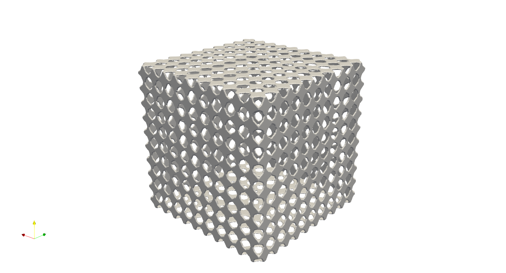

Surface Lattice#
Surface lattice can be a design option for lightweight structural component. It is easy to generate the surface lattice using existing meshes of the geometry. In Artisan 0.1.7, user can use existing conformal lattice generation functionality to morphy 2D geometric surface or strut-based lattice onto the 2D Triangle or Quad elements of meshes. All examples here are stored under //Test_json//SurfaceLattice//. User may consider the integrated surface mesher to generate the surface subdivisions for morphing the lattice, please refer to the meshing section for more details.
Strut Surface Lattice#
Here is an example (filename: BallSurfaceLattice.json) of using customized strut lattice definition to generate surface lattice on a ball.
{"Setup":{ "Type" : "Geometry",
"Geomfile": ".//sample-obj//sphere.stl",
"Rot" : [0.0,0.0,0.0],
"res":[0.005,0.005,0.005],
"Padding": 5,
"onGPU": false,
"memorylimit": 16106127360
},
"WorkFlow":{
"1": {"Add_Lattice":{
"la_name": ".//Test_json//SurfaceLattice//SurfaceLattice.mld",
"size": [0.1,0.1,0.1], "thk":0.02, "Rot":[0.0,0.0,0.0], "Trans":[0.0,0.0,0.0], "Inv": false, "Fill": false,
"Cube_Request": {}
}
},
"2":{
"Export": {"outfile": ".//Test_results/BallBasicTetNMesh_Lattice.stl"}
}
},
"PostProcess":{"CombineMeshes": true,
"RemovePartitionMeshFile": false,
"RemoveIsolatedParts": true,
"ExportLazPts": true}
}
Its customized lattice definition is as following. The file SurfaceLattice.mld tells Artisan to check the lattice definition with mesh file.
{
"type": "ConformalLattice",
"definition": {
"meshfile": ".//sample-obj//sphere.stl",
"la_name" : ".//Test_json//SurfaceLattice//CustomSurfaceLattice_Strut.txt"
}
}
The file CustomSurfaceLattice_Strut.txt defines the nodes and connectivity of a lattice unit. It reads the original geometry file sphere.stl as mesh, and morphs the strut lattice onto the elements.
{
"type": "strut",
"definition": {
"pts":
[[0.3333, 0.3333, 0.0],
[0.0, 0.0, 0.0],
[1.0, 0.0, 0.0],
[0.0, 1.0, 0.0]],
"cnnt":[
[0, 1],
[0, 2],
[0, 3]],
"ladomain" : "Triangle"
}
}
Note that the parameter ladomain is triangle that defines the 2D surface strut lattice in a triangle domain. It is possible to define a Quad domain that requires a 2D quadrilateral elements. One also should notice that, the pts coordinates must lay on the x-y plane, which means the z components of nodes should be same. Here the z component is 0. Then the surface lattice on the ball is as following.
Note
User may take advantage of triangle divisions in the stl/obj/ply file format. User may use mesh lattice setup to read in these geometric information to generate the surface lattice.
Addition example in file Crankhandle_SurfaceLattice.json shows the same style surface lattice on more complicated geometry.
Geometry Surface Lattice#
Geometry surface lattice basically morphs the given 2D geometry onto the given mesh. Here is example (filename: Box_SurfaceLattice.json) of morphing irregular geometry onto a cube with quadrilateral elements with the unit element as showing below.
{"Setup":{ "Type" : "Sample",
"Sample": {"Domain" : [[0.0,200.0],[0.0,200.0],[0.0,200.0]], "Shape": "Box"},
"Geomfile": "",
"Rot" : [0.0,0.0,0.0],
"res":[1.0,1.0,1.0],
"Padding": 4,
"onGPU": false,
"memorylimit": 1073741824000
},
"WorkFlow":{
"1": {"Add_Lattice":{
"la_name": ".//Test_json//SurfaceLattice//Box_SurfaceLattice.mld",
"size": [5.0,5.0,5.0], "thk":1.0, "Rot":[0.0,0.0,0.0], "Trans":[0.0,0.0,0.0], "Inv": false, "Fill": false,
"Cube_Request": {}
}
},
"2":{
"Export": {"outfile": ".//Test_results/Box_SurfaceLattice.stl"}
}
},
"PostProcess":{"CombineMeshes": true,
"RemovePartitionMeshFile": false,
"RemoveIsolatedParts": true,
"ExportLazPts": true}
}
The file Box_SurfaceLattice.mld defines the surface lattice using BoxShellMesh.med, as following.
{
"type": "ConformalLattice",
"definition": {
"meshfile": ".//Test_json//SurfaceLattice//BoxShellMesh.med",
"la_name" : ".//Test_json//SurfaceLattice//CustomSurfaceLattice_Geom.txt"
}
}
and the lattice definition is in the file CustomSurfaceLattice_Geom.txt. Note the parameter ladomain became Quad. It meant only match to quadrilateral element.
{
"type": "Geom-Plate",
"definition": {
"file": ".//sample-obj//SurfacePatch.STL",
"ladomain": "Quad"
}
}
Here is the result.
